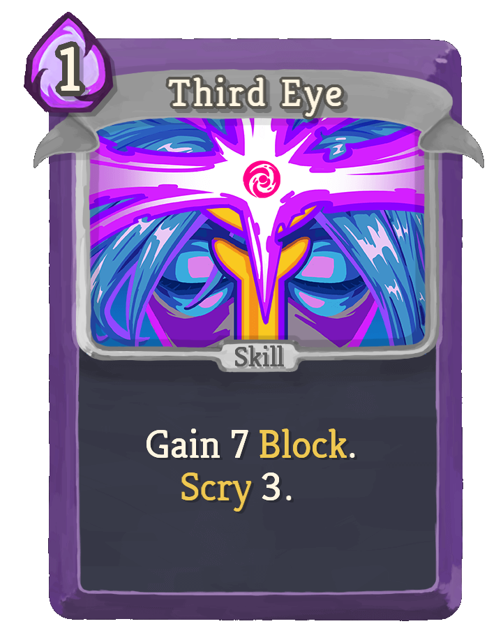
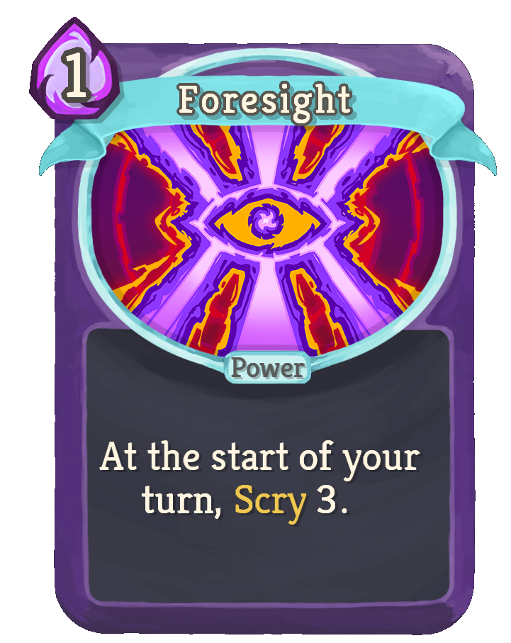
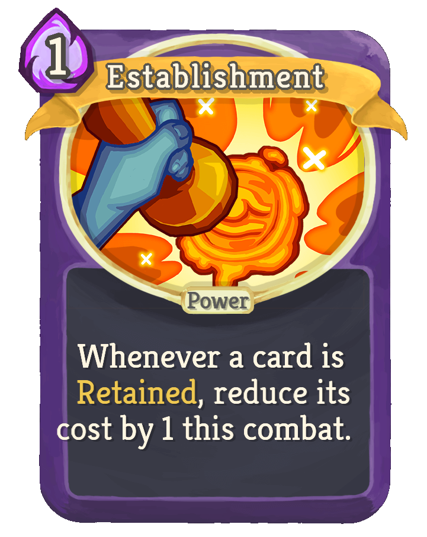
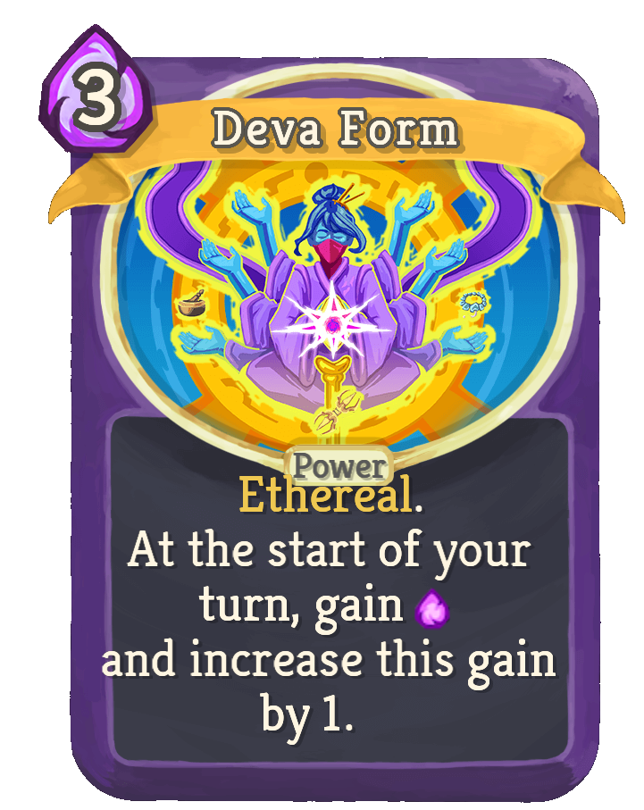
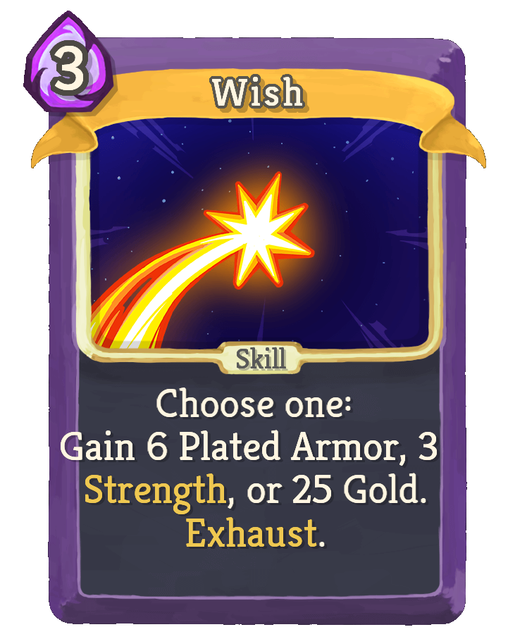

The Watcher

Playstyles of the Watcher
The Watcher has her own very unique playstyle. She benefits from changing Stances that improve her ability to fight and defend. She also has access to unique card effects. The first one, Scry, lets her see X amount of cards in her draw pile and keep or discard them in that order. This lets her plan ahead very effectively. The second, Retain. These cards stay in your hand at the end of a turn rather than being discarded. Another effective way to plan ahead. Her starting relic is Pure Water. This gives her a Miracle card to her hand with Retain. When she plays it, she gains an addtional energy. Upgraded, this becomes Holy Water. She now starts with 3 Miracles.
Some of my favourite Watcher cards
| Card | Type | Energy | Why I Like It |
|---|---|---|---|
 |
Skill | 1 | Gives block and lets you scry. Great for planning ahead. |
 |
Power | 1 | Passive scry every turn makes filtering statuses and curses out easy, while making core cards easier to access. |
 |
Power | 1 | Reduces cost of retained cards. This works amazing with so many cards. |
 |
Power | 3 | The constant energy gaining is insane. If you have the icecream relic and an X cost card that deals damage. You have a powerhouse of a combo. |
 |
Skill | 3 | It's very simple and effective. I greed mostly and pick money. |